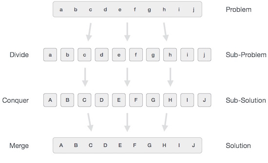
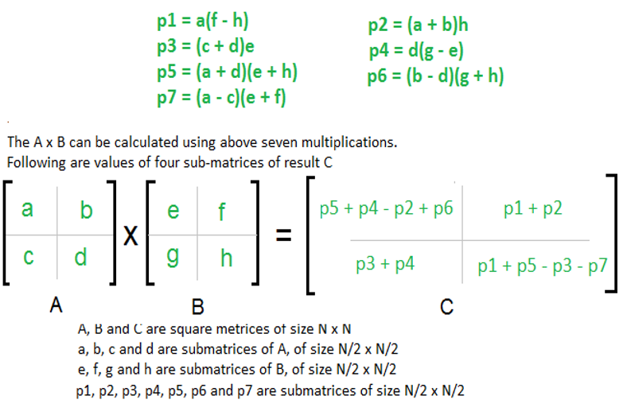
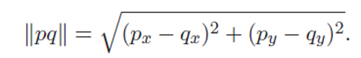
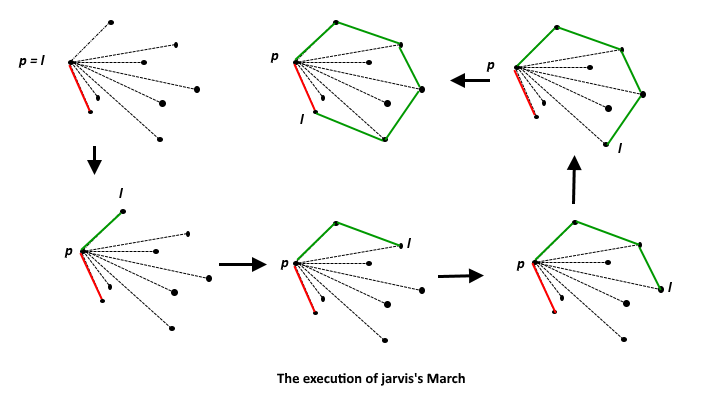

Divide and Conquer
- Divide and Conquer is an algorithmic paradigm. A typical Divide and Conquer algorithm solves a problem using following three steps.
- Divide: Break the given problem into subproblems of same type:
- Conquer: Recursively solve these subproblems
- Combine: Appropriately combine the answers
A classic example of Divide and Conquer is Merge Sort demonstrated below. In Merge Sort, we divide array into two halves, sort the two halves recursively, and then merge the sorted halves: Binary Search
Search a sorted array by repeatedly dividing the search interval in half. Begin with an interval covering the whole array. If the value of the search key is less than the item in the middle of the interval, narrow the interval to the lower half. Otherwise narrow it to the upper half. Repeatedly check until the value is found or the interval is empty.
Binary search algorithm-
Binarysearch(a[n], key)
start=0; end=n-1;
While(start<=end)
{
mid=(start+end)/2;
return mid
if(a[mid]==key)
return mid;
else if(a[mid]<key)
end=mid-1;
else
start=mid+1;
}
return -1;
Merge Sort
Merge sort is based on Divide and conquer method. It takes the list to be sorted and divide it in half to create two unsorted lists. The two unsorted lists are then sorted and merged to get a sorted list. The two unsorted lists are sorted by continually calling the merge-sort algorithm; we eventually get a list of size 1 which is already sorted. The two lists of size 1 are then merged.
- Steps using Divide and Conquer strategy:
- if it is only one element in the list it is already sorted, return.
- divide the list recursively into two halves until it can no more be divided.
- merge the smaller lists into new list in sorted order.
If r > l
1. Find the middle point to divide the array into two halves:
middle m = (l+r)/2
2. Call mergeSort for first half:
Call mergeSort(arr, l, m)
3. Call mergeSort for second half:
Call mergeSort(arr, m+1, r)
4. Merge the two halves sorted in step 2 and 3:
Call merge(arr, l, m, r)
Quick Sort
Like Merge Sort, QuickSort is a Divide and Conquer algorithm.
It picks an element as pivot and partitions the given array around the picked pivot.
There are many different versions of quickSort that pick pivot in different ways.
- Always pick first element as pivot.
- Always pick last element as pivot (implemented below)
- Pick a random element as pivot.
- Pick median as pivot.
The key process in quickSort is partition(). Target of partitions is, given an array and an element x of array as pivot, put x at its correct position in sorted array and put all smaller elements (smaller than x) before x, and put all greater elements (greater than x) after x. All this should be done in linear time.Pseudocode for recursive quicksort function:
/* low --> Starting index, high --> Ending index */
quickSort(arr[], low, high)
{
if (low < high)
{
/* pi is partitioning index, arr[pi] is now
at right place */
pi = partition(arr, low, high);
quickSort(arr, low, pi - 1); // Before pi
quickSort(arr, pi + 1, high); // After pi
}
}Strassen's Matrix
Following is simple Divide and Conquer method to multiply two square matrices.
1) Divide matrices A and B in 4 sub-matrices of size N/2 x N/2 as shown in the below diagram.
2) Calculate following values recursively. ae+bg, af+bh, ce+dg and cf+dh.
In the above method, we do 8 multiplications for matrices of size N/2 x N/2 and 4 additions. Addition of two matrices takes O(N2) time.
So the time complexity can be written as T(N) = 8T(N/2) + O(N2)
From Master's Theorem, time complexity of above method is O(N3) which is unfortunately same as the above naive method.In the above divide and conquer method, the main component for high time complexity is 8 recursive calls. The idea of Strassen’s method is to reduce the number of recursive calls to 7. Strassen’s method is similar to above simple divide and conquer method in the sense that this method also divides matrices to submatrices of size N/2 x N/2 as shown in the above diagram, but in Strassen’s method, the four sub-matrices of result are calculated using following formulae.
 Closest Pair
We are given an array of n points in the plane, and the problem is to find out the closest pair of points in the array.
For example, in air-traffic control, you may want to monitor planes that come too close together, since this may indicate a possible collision.
Recall the following formula for distance between two points p and q.

The Brute force solution is O(n2), compute the distance between each pair and return the smallest.
We can calculate the smallest distance in O(nLogn) time using Divide and Conquer strategy.
Algorithm
Input: An array of n points P[]
Output: The smallest distance between two points in the given array.
As a pre-processing step, input array is sorted with x coordinates.
1) Find the middle point in the sorted array, we can take P[n/2] as middle point.
2) Divide the given array in two halves. The first subarray contains points from P[0] to P[n/2]. The second subarray contains points from P[n/2+1] to P[n-1].
3) Recursively find the smallest distances in both subarrays. Let the distances be dl and dr. Find the minimum of dl and dr. Let the minimum be d.
4) From above 3 steps, we have an upper bound d of minimum distance. Now we need to consider the pairs such that one point in pair is from left half and other is from right half. Consider the vertical line passing through passing through P[n/2] and find all points whose x coordinate is closer than d to the middle vertical line. Build an array strip[] of all such points.
5) Sort the array strip[] according to y coordinates. This step is O(nLogn). It can be optimized to O(n) by recursively sorting and merging.
6) Find the smallest distance in strip[]. This is tricky. From first look, it seems to be a O(n2) step, but it is actually O(n). It can be proved geometrically that for every point in strip, we only need to check at most 7 points after it (note that strip is sorted according to Y coordinate).
7) Finally return the minimum of d and distance calculated in above step 6.
Convex Hull
A polygon is convex if any line segment joining two points on the boundary stays within the polygon.
The convex hull of a set of points in the plane is the smallest convex polygon for which each point is either on the boundary or in the interior of the polygon.
A vertex is a corner of a polygon. For example, the highest, lowest, leftmost and rightmost points are all vertices of the convex hull.
Below are the different algorithms that can be used to solve convex hull:
-> Graham Scan
-> Jarvis March
-> Divide & Conquer
Algorithm
Let x0 be the leftmost point.
Let x1 be the first point counter clockwise when viewed fromx0.
Then x2 is the first point counter clockwise when viewed from x1, and so on.
i = 0
while not done do
xi+1 = first point counter clockwise from xi
 Some important links:
Divide and Conquer Technique-https://youtu.be/6BWvV4xVh8U
Binary search- https://youtu.be/P3YID7liBug
Merge sort- https://youtu.be/TzeBrDU-JaY
Strassen's matrix- https://youtu.be/0oJyNmEbS4w
Convex hull- https://youtu.be/ZFxFKABnXN0